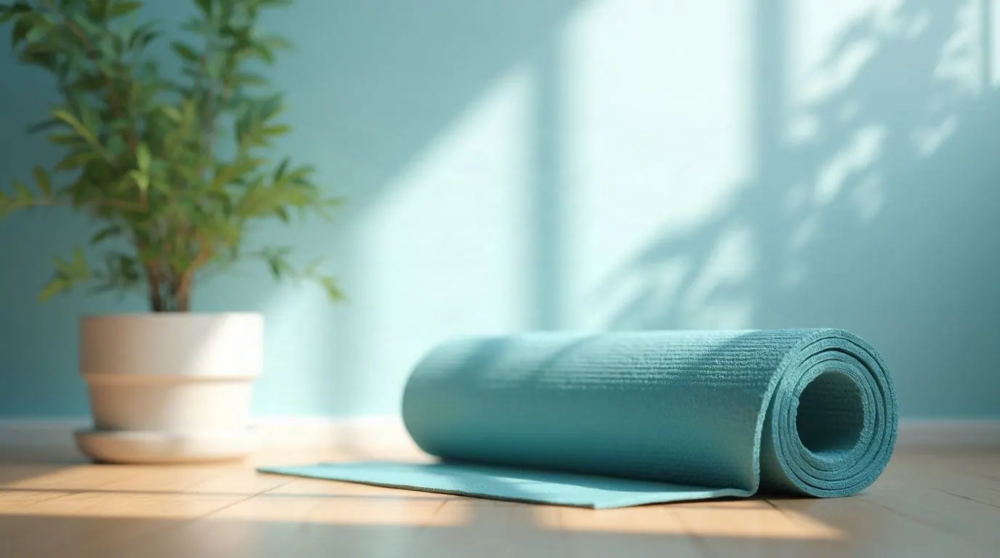
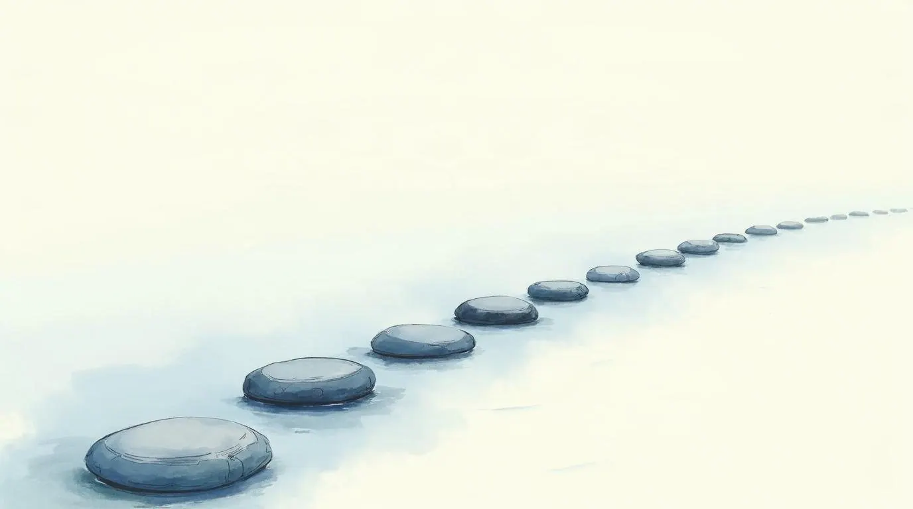
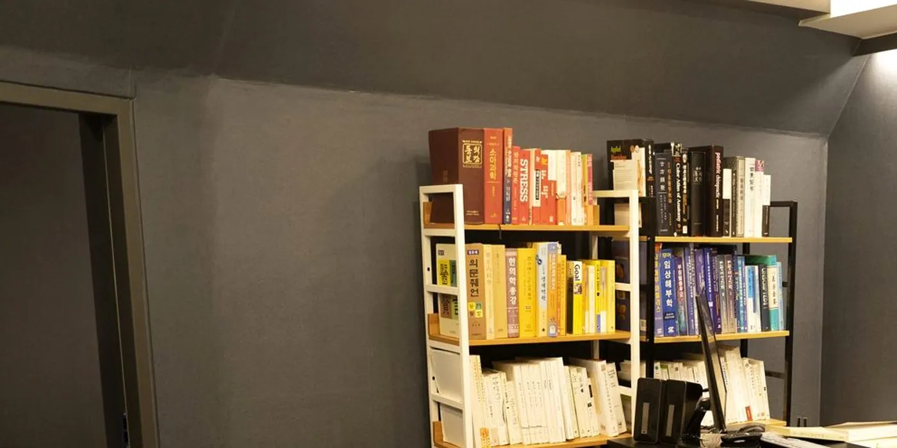

추나요법을 처음 받기 전에는 불편한 동작 한두 가지, 최근 영상 검사 결과, 수술·골절·골다공증 이력, 임신 가능성, 복용 중인 약을 정리해 오세요. 진찰 후 추나가 맞는지 판단하고 적용 방법을 정하는 데 도움이 됩니다.
여쭙는 것
- 어떤 동작을 할 때 가장 불편하신가요? 앉았다 일어설 때, 고개를 돌릴 때처럼 알려…
- 불편이 언제, 어떤 계기로 시작됐나요? 넘어지거나 부딪힌 일이 있었나요?
- 최근 X선이나 MRI 같은 영상 검사를 받은 적이 있나요?
생활에서 해 볼 것
- 신축성 있고 편한 옷을 입고 오기
- 식사 직후보다는 조금 시간이 지난 뒤 방문하기
- 불편한 동작 한두 가지를 미리 정해 두고 진료 전후로 같은 동작을 해 보기
한의원에서 함께 살필 것
- 오래 앉아 생긴 목·허리 뻐근함이 반복되는 경우, 자세와 움직임을 함께 살핍니다.
- 진찰 후 추나가 맞지 않다고 판단되면 다른 방법을 안내합니다.
- 진료 중 불편하면 언제든 바로 말씀해 주세요. 강도와 방법을 조절합니다.
먼저 확인이 필요한 신호
- 다리에 힘이 빠지거나 대소변 보기가 갑자기 달라진 경우
- 최근 넘어진 뒤 통증이 심해 움직이기 어려운 경우
- 원인을 모르는 체중 감소와 함께 밤에 통증이 심해지는 경우

노량진 학원가와 상도동 사무실에서 하루 종일 앉아 지내다 보면 "추나를 한번 받아 볼까" 생각하게 됩니다. 처음이라 막연히 긴장된다는 분도 많습니다. 받기 전에 가장 불편한 동작 한두 가지, 수술·골절·골다공증 이력, 임신 가능성, 복용 중인 약, 최근 영상 검사 결과만 스스로 정리해 두면 상담이 훨씬 구체적이 되고 마음도 한결 가벼워질 수 있습니다.
노량진역에서 오신다면 노량진역(1·9호선) 3번 출구에서 마을버스 동작01을 타고 신동아리버파크에서 내리시면 됩니다. 상도역에서는 3번 출구로 나와 약 200m 직진한 뒤 오거리에서 우회전해 약 200m 오시면 됩니다. 수업이나 자습 사이에 들르신다면, 초진은 진찰 시간이 있어 재진보다 오래 걸릴 수 있으니 여유 있게 시간을 잡아 주세요.
왜 받기 전에 정리해 두면 좋을까요
추나를 찾게 되는 뻐근함은 대개 생활 속 자세에서 시작되지만, 같은 뻐근함이라도 몸 상태에 따라 고를 수 있는 기법과 세기가 달라집니다.
- 오래 앉아 있으면 골반이 뒤로 말리고 허리와 등이 굽은 채로 굳기 쉽습니다.
- 모니터와 휴대폰을 내려다보는 시간이 길면 목과 어깨에 부담이 몰립니다.
- 한쪽으로 가방을 메거나 다리를 꼬는 습관이 쌓이면 몸의 균형이 한쪽으로 기울 수 있습니다.
- 움직임이 줄면 허리와 엉덩이 주변 근육이 짧아지고 약해지기도 합니다.
- 골다공증, 골절·수술 이력, 임신, 피를 묽게 하는 약 복용 여부에 따라 추나를 미루거나 부드러운 방법만 쓰는 경우가 있어, 미리 알려 주시면 그날 진료를 안전하게 정할 수 있습니다.

먼저 이렇게 여쭙니다
- 어떤 동작을 할 때 가장 불편하신가요? 앉았다 일어설 때, 고개를 돌릴 때처럼 알려 주세요.
- 불편이 언제, 어떤 계기로 시작됐나요? 넘어지거나 부딪힌 일이 있었나요?
- 최근 X선이나 MRI 같은 영상 검사를 받은 적이 있나요?
- 척추나 관절 수술, 골절, 골다공증 진단을 받은 적이 있나요?
- 임신 중이거나 임신 가능성이 있나요? 피를 묽게 하는 약을 드시나요?
- 예전에 추나를 받아 본 적이 있다면 그때 불편했던 점이 있었나요?
일상에서 먼저 해 볼 수 있는 것
- 신축성 있고 편한 옷을 입고 오기
- 식사 직후보다는 조금 시간이 지난 뒤 방문하기
- 불편한 동작 한두 가지를 미리 정해 두고 진료 전후로 같은 동작을 해 보기
- 진료 뒤 바로 무리한 운동 일정은 잡지 않기
- 받기 하루 이틀 전부터 하루에 앉아 있는 시간과 자세를 한 번 적어 보기
- 50분쯤 앉아 있었다면 일어나 2~3분 걷거나 가슴을 펴 보기

상황별 예시
- 예를 들어 노량진 학원에서 하루 열 시간 가까이 앉아 공부하는 수험생이라면, 진료 직후 바로 자습실로 돌아가야 하는 경우가 많습니다. 이럴 때는 공부 흐름이 덜 끊기는 시간대로 진료를 잡고, 자습실 의자와 책상 높이를 사진으로 찍어 오시면 앉는 자세를 함께 살필 수 있습니다.
- 예를 들어 사무실에서 모니터 두 대를 쓰며 고개를 한쪽으로 돌린 채 일하는 직장인이라면, 목과 등 한쪽만 결리는 경우가 있습니다. 어느 쪽으로 고개를 돌릴 때 불편한지, 퇴근 무렵 더 심해지는지를 알려 주시면 도움이 됩니다.
- 예를 들어 골다공증 진단을 받은 어르신이라면 강한 교정보다 부드러운 기법을 먼저 검토하거나 추나 대신 다른 방법을 안내할 수 있어, 골밀도 검사 결과와 드시는 약을 함께 가져와 주세요.
한의원에서 함께 살필 수 있는 경우
- 오래 앉아 생긴 목·허리 뻐근함이 반복되는 경우, 자세와 움직임을 함께 살핍니다.
- 진찰 후 추나가 맞지 않다고 판단되면 다른 방법을 안내합니다.
- 진료 중 불편하면 언제든 바로 말씀해 주세요. 강도와 방법을 조절합니다.
좋은꿈참사랑한의원에서는 먼저 불편한 동작을 충분히 듣고 서고 앉고 걷는 모습을 살핀 뒤, 추나가 맞는지 판단합니다. 첫 방문에는 접수 때 기본 정보와 복용 중인 약을 적고, 진료실에서 불편이 시작된 경위와 수술·골절 이력을 여쭌 뒤 맥을 짚습니다.
이어서 목과 허리를 어느 방향으로 움직일 때 막히는지, 팔다리 힘과 몸의 좌우 높이는 어떤지 확인하고, 오늘 할 방법과 이유를 먼저 설명드린 다음 진행합니다. 필요하다고 판단될 때 침·약침과 이어서 쓰며, 추나 뒤에는 처음 확인한 동작을 다시 해 보며 달라진 점을 함께 봅니다.
귀가 전에는 집에서 피할 자세와 다음 진료에서 다시 확인할 동작을 알려 드립니다.

스스로 점검해 보세요
추나를 받기 전에 아래 항목을 한 번 짚어 보시고, 해당되는 것은 진료 때 먼저 말씀해 주세요.
- 앉았다 일어설 때, 고개를 돌릴 때처럼 불편한 동작을 두 가지 안으로 꼽을 수 있다
- 최근 넘어지거나 부딪힌 뒤에 통증이 시작된 것은 아니다
- 골다공증, 골절, 척추·관절 수술 이력이 있다면 언제였는지 기억해 두었다
- 임신 중이거나 임신 가능성이 있는지 확인했다
- 피를 묽게 하는 약처럼 오래 드시는 약의 이름을 적어 두었다
- 다리로 뻗치는 저림이나 힘 빠짐이 있는지 스스로 살펴보았다
- 진료 당일 입을 편한 옷과 식사 시간을 정해 두었다
이렇게 기록해 오시면 상담이 쉬워집니다
- 가장 불편한 동작 두 가지와 그때의 통증 정도(0~10점)
- 하루에 앉아 있는 시간과 책상·의자 높이
- 하루 중 가장 뻐근한 시간대(아침에 일어날 때, 오후 늦게 등)
- 영상 검사 결과지, 수술·골절 이력
- 복용 중인 약, 특히 혈액을 묽게 하는 약

이런 증상은 먼저 확인이 필요합니다
- 다리에 힘이 빠지거나 대소변 보기가 갑자기 달라진 경우
- 최근 넘어진 뒤 통증이 심해 움직이기 어려운 경우
- 원인을 모르는 체중 감소와 함께 밤에 통증이 심해지는 경우
추나요법의 건강보험 적용 조건과 본인부담금은 개인 상황에 따라 다를 수 있어 방문 전 전화(02-815-7510)로 확인해 주세요. 개인마다 진료 내용과 기간은 다를 수 있으며, 복용 중인 약은 처방한 의사와 상의 없이 줄이거나 끊지 않습니다. 다리 힘이 빠지거나 대소변 조절이 어려워졌다면 기다리지 말고 응급실을 찾거나 가까운 응급실로 가세요.
얼마나 지켜보고 언제 상담할까요
- 오래 앉은 날 저녁에만 뻐근하고 자고 나면 가라앉는다면, 일주일쯤 앉는 시간을 나누고 자주 일어나 보며 지켜보셔도 됩니다.
- 같은 자리가 2~3주 넘게 되풀이해 뻐근하거나, 쉬어도 다음 날 아침까지 이어진다면 상담을 받아 보세요.
- 추나를 받은 뒤 하루 이틀은 몸살처럼 뻐근할 수 있습니다. 사흘이 지나도 점점 심해지거나 저림이 새로 생기면 다음 예약을 기다리지 말고 연락해 주세요.
- 넘어진 뒤 통증이 심하거나 다리 힘 빠짐·대소변 변화가 있으면 추나보다 영상 검사가 가능한 의료기관 확인이 먼저입니다.

관련 글
- 추나요법은 처음 받을 때 어떤 순서로 진행되나요?
- 추나를 받은 날 집에서는 어떻게 지내면 좋을까요?
- 추나요법 건강보험 적용은 어떻게 확인하나요?
한눈에 보는 표
| 구분 | 핵심 |
|---|---|
| 여쭙는 것 | 어떤 동작을 할 때 가장 불편하신가요? 앉았다 일어설 때, 고개를 돌릴 때처럼 알려 주세요. 불편이 언제, 어떤 계기로 시작됐나요? 넘어지거나 부딪힌 일이 있었나요? |
| 생활에서 해 볼 것 | 신축성 있고 편한 옷을 입고 오기 식사 직후보다는 조금 시간이 지난 뒤 방문하기 |
| 한의원에서 함께 살필 것 | 오래 앉아 생긴 목·허리 뻐근함이 반복되는 경우, 자세와 움직임을 함께 살핍니다. 진찰 후 추나가 맞지 않다고 판단되면 다른 방법을 안내합니다. |
| 먼저 확인이 필요한 신호 | 다리에 힘이 빠지거나 대소변 보기가 갑자기 달라진 경우 최근 넘어진 뒤 통증이 심해 움직이기 어려운 경우 |
자주 묻는 질문
추나를 받기 전에 영상 검사를 꼭 해야 하나요?
모든 분께 필요하지는 않습니다. 진찰 후 필요하다고 판단되면 검사가 가능한 의료기관을 안내합니다.
한 번 받으면 바로 달라지나요?
사람마다 다릅니다. 진료 전후로 같은 동작을 확인하며 변화를 함께 기록합니다.
추나를 받을 때 소리가 나면 무서운데요.
추나에는 관절과 근육을 부드럽게 움직이는 방법도 있어 꼭 소리가 나는 것은 아닙니다. 긴장되는 점을 미리 말씀해 주시면 설명을 드리고 방법을 함께 정합니다.
추나 건강보험 적용은 어떻게 확인하나요?
적용 조건과 본인부담금은 개인 상황에 따라 다를 수 있어 방문 전 전화로 확인해 주세요.
이 글은 일반적인 건강 정보이며 개인의 진단이나 치료를 대신하지 않습니다. 증상이 있거나 복용 중인 약이 있다면 진료를 통해 확인하세요. 치료 효과는 개인마다 다를 수 있습니다.
작성 기준: 일반적으로 알려져 있는 건강 정보를 참고해 정리했습니다(대표원장 감수). 증상 기록은 1~2주 동안 하루 1회, 비슷한 시간에 적어 오시면 지난 상태와 비교하기 쉽습니다.
좋은꿈참사랑한의원은 재진 때 지난번 이야기부터 이어서 여쭙니다. 진료시간과 예약은 오시는 길에서 확인하세요.
어디서 상담받을 수 있나요?
좋은꿈참사랑한의원은 서울 동작구 만양로2길 2 신성빌딩 3층·5층(서울 동작구 상도동, 7호선 상도역 3번 출구 근처)에 있습니다. 한의사 3명(이종호 대표원장, 조영기 수석진료원장, 정원영 진료원장)이 진료합니다. 진료시간은 평일 09:30~20:00(점심 13:00~14:00), 토·일·공휴일 09:30~15:00이며, 방문 전 전화로 확인을 권합니다. 예약은 네이버 예약, 카카오톡 상담, 전화 02-815-7510로 받습니다.